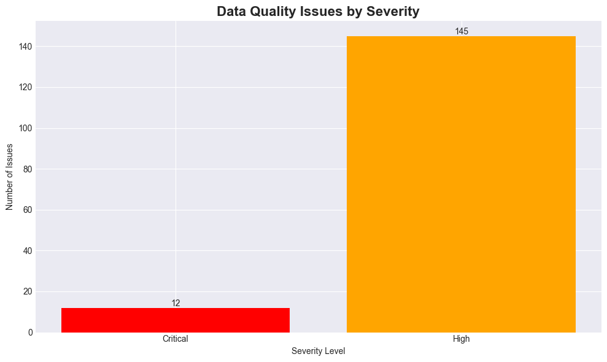
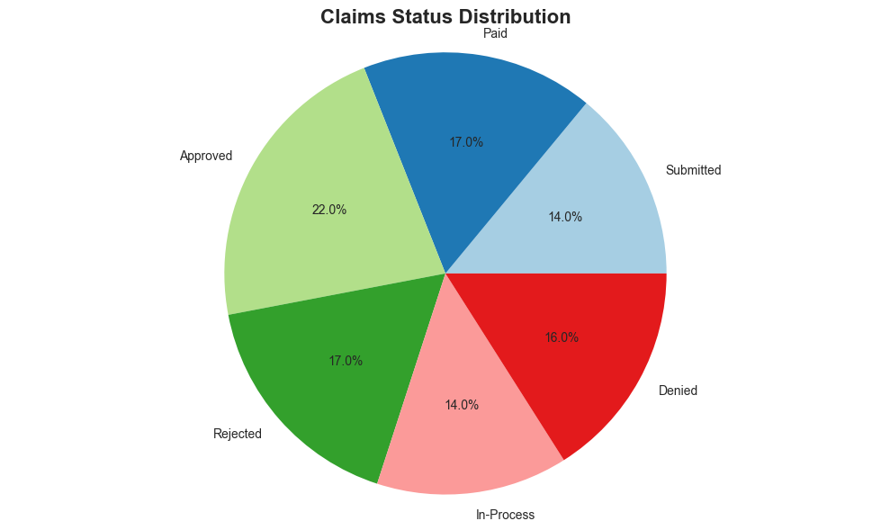
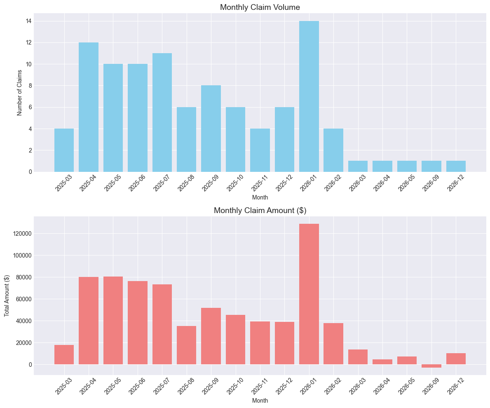

Generated on: 2026-03-13 14:49:45
Issue Count: 12
Severity: Critical
Action Required: Immediate investigation required
Issue Count: 113.0
Severity: High
Issue Count: 32
Severity: High



| Check Name | Issue Count | Severity |
|---|---|---|
| 1.1 Orphaned Claims | 12 | Critical |
| 2.1 Claim Total Mismatch | 113.0 | High |
| 3.1 Gender-Diagnosis Conflict | 32 | High |
This report was automatically generated by the Data QA Automation Framework.